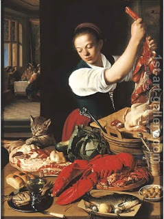

Keritot 23 - Two People Ate Two Pieces Of Meat
If there were two pieces of meat, one ordinary, and another of consecrated meat, and one person ate one of them, the Sages say that he need not bring an offering of uncertainty, but Rabbi Akiva says that he does. This is the ruling we saw before . However, if now he ate the second piece, then all agree that he needs to bring a guilt-offering for misappropriation of Temple property.
If one person ate the first piece of meat, and then came another person and ate the second piece, the second person did not have a choice. Nevertheless, each one of them needs to bring an offering of uncertainty - this is the opinion of Rabbi Akiva. Earlier we saw an argument whether a choice between two objects is required for uncertainty , or if a doubt about one object is sufficient, and Rabbi Akiva holds that one object is sufficient.
Rabbi Shimon says that since between the two of them they have certainly committed a transgression, there is no uncertainty here. Rather, they bring a guilt-offering in partnership, and stipulate, "If I am the one who committed misappropriation, this is my offering, but if you did - then I relinquish my ownership, and the offering is yours." Rabbi Yose says that one cannot divide guilt in this manner, and thus the argument reverts back to Rabbi Akiva and the Sages.
Art: Jeremias van Winghen - A kitchen interior with a maid preparing meat